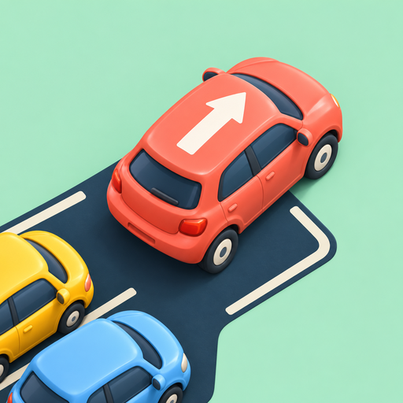
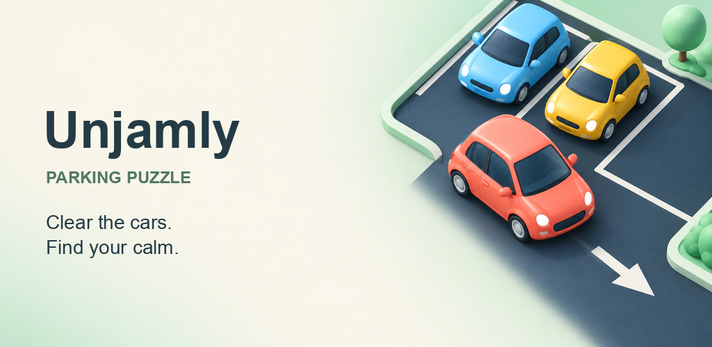

Follow the arrows
Each car drives straight in its facing direction. Clear the vehicles blocking its lane first.
Tap a car. Find an open lane. Turn a busy parking lot into a satisfying clean slate.
Google Play release in preparation100 puzzles. Offline play. No account required.

Each car drives straight in its facing direction. Clear the vehicles blocking its lane first.
Start with four cars. Work your way up to parking puzzles with 25 cars, vans and buses.
No countdown. Three hearts per attempt, helpful hints and a fresh retry when you need it.

Tap it once. It follows its arrow until it leaves the parking lot. If another vehicle blocks its path, clear that vehicle first. A blocked tap costs one heart.
A hint highlights a vehicle with an open lane. Retry restarts the current level with three hearts. Both are available without watching an advertisement in version 1.0.0.
Yes. An optional rewarded ad can restore one heart once per attempt. Occasional interstitial ads appear between levels, with a minimum two-minute gap. Hints and a fresh retry remain free. Manage available ad privacy choices from the game menu.
Yes. All 100 puzzles are included in the app. Ads, privacy-choice messages and opening support pages require internet.
Your highest unlocked level, coins and sound preference are saved on your device. An unfinished attempt starts fresh when you reopen the app. Progress does not sync between devices and is removed when you clear app storage or uninstall.
Coins record your level rewards in this first release. A coin shop and garage-building system are not included.
Email office@webillium.com. Include your app version, device model and a brief description of the problem. Never send passwords or payment details.